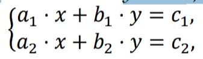
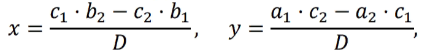

Ҳалли масъалаҳои барномасози Begin дар Python.
Begin1(Abramyan).
Тарафи квадрат 𝑎 дода шудааст. Периметри он 𝑝 = 4 ⋅ 𝑎 ёфта шавад.
a=int(input())
P=4*a
print("Периметри квадрати P: ", P)
Begin2(Abramyan).
Тарафи квадрат 𝑎 дода шудааст. Масоҳати он 𝑠 = 𝑎^2 ёфта шавад.
a=int(input())
s=a*a
print("Тарафи квадрати S: ", s)
Begin3(Abramyan).
Тарафи росткунҷа 𝑎 ва 𝑏 дода шудаанд. Масоҳати он 𝑠 = 𝑎 ⋅ 𝑏 ва перемитри он 𝑝 = 2 ⋅ (𝑎 + 𝑏) ёфта шаванд.
a=int(input())
b=int(input())
s=a*b
p=2*(a+b)
print("Масоҳати росткунҷа s: ",s)
print("Масоҳати перемитр p: ",p)
Begin4(Abramyan).
Диаметри давра 𝑑 дода шудааст. Дарозии давра 𝑙 = 𝜋 ⋅ 𝑑 ёфта шавад. Ба сифати қимати 𝜋 = 3.14 истифода бурда шавад.
d=int(input())
pi=3.14
l=pi*d
print("Дарозии давра l: ",l)
Begin5(Abramyan).
Дарозии теғаи куб 𝑎 дода шудааст. Ҳаҷми куб 𝑣 = 𝑎^3 ва масоҳати сатҳи он 𝑠 = 6 ⋅ 𝑎^2 ёфта шаванд
a=int(input())
v=a^3
s=6*(a*a)
print("Ҳаҷми куб v: ",v)
print("Масоҳати сатҳи куб s: ",s)
Begin6(Abramyan).
Дарозии теғаҳои параллелипипеди росткунҷа 𝑎, 𝑏 ва 𝑐 дода шудаанд. Ҳаҷми он 𝑣 = 𝑎 ⋅ 𝑏 ⋅ 𝑐 ва масоҳати сатҳи он 𝑠 = 2 ⋅ (𝑎 ⋅ 𝑏 + 𝑏 ⋅ 𝑐 + 𝑎 ⋅ 𝑐) ёфта шаванд.
a=int(input())
b=int(input())
c=int(input())
v=a*b*c
𝑠=2⋅(𝑎⋅𝑏+𝑏⋅𝑐+𝑎⋅𝑐)
p=2*(a+b)
print("Ҳаҷми параллелипипеди росткунҷа v: ",v)
print("Масоҳати сатҳи параллелипипеди росткунҷа s: ",s)
Begin7(Abramyan).
Аз рӯи қимати додашудаи 𝑟 дарозии давра 𝑙 ва масоҳати доира 𝑠 ёфта шаванд: 𝑙 = 2 ⋅ 𝜋 ⋅ 𝑟; 𝑠 = 𝜋 ⋅ r^2 . Ба сифати қимати 𝜋 = 3.14 истифода бурда шавад.
r=int(input())
l=int(input())
s=int(input())
pi=3.14
l=2*pi*r
s=pi*(r^2)
print("Дарозии давра l: ",l)
print("Масоҳати давра s: ",s)
Begin8(Abramyan).
Ададҳои 𝑎 ва 𝑏 дода шудаанд. Миёнаи арифметикии онҳо (𝑎 + 𝑏)/2 ёфта шавад.
a=int(input())
b=int(input())
mr=(a+b)/2
print("Миёнаи арифметикии a ва b: ",mr)
Begin9(Abramyan).
Ададҳои 𝑎 ва 𝑏 дода шудаанд. Миёнаи геометрии онҳо ёфта шавад, яъне решаи квадратӣ аз ҳосили зарби онҳо: √𝑎 ⋅ 𝑏.
imprt math
a=int(input())
b=int(input())
mg=math.sqrt(a*b)
print("Миёнаи геометрии a ва b: ",mg)
Begin10(Abramyan).
. Ду ададҳои ғайрисифрии 𝑎 ва 𝑏 дода шудаанд.Ҳосили ҷамъ, тарҳ, зарб ва тақсими квадрати онҳо ёфта шаванд.
a=int(input())
b=int(input())
print("Ҳосили ҷамъи a ва b: ",a+b)
print("Ҳосили тарҳи a ва b: ",a-b)
print("Ҳосили зарби a ва b: ",a*b)
print("Ҳосили тақсими a ва b: ",a/b)
Begin11(Abramyan).
Ду ададҳои ғайрисифрии 𝑎 ва 𝑏 дода шудаанд.Ҳосили ҷамъ, тарҳ, зарб ва тақсими қиматҳои мутлақ (модул)-и онҳо ёфта шаванд.
Begin12(Abramyan).
Катетҳои секунҷаи росткунҷа 𝑎 ва 𝑏 дода шудаанд.Гипотенуза 𝑐 ва периметри он ёфта шаванд: 𝑐 = √𝑎^2 + 𝑏^2, 𝑝 = 𝑎 + 𝑏 + 𝑐.
Begin13(Abramyan).
. Ду доираҳои марказҳояшон умумӣ ва радиусашон 𝑟1 ва 𝑟2 дода шудаанд (𝑟1 > 𝑟2). Масоҳатҳои ин доираҳо 𝑠1 ва 𝑠2, инчунин масоҳати ҳалқа 𝑠3, ки радиуси берунаи он 𝑟1 ва радиуси даруниаш 𝑟2 аст,ёфта шаванд: 𝑠1 = 𝜋 ⋅ (𝑟1)^2, 𝑠2 = 𝜋 ⋅ (𝑟2)^2, 𝑠3 = 𝑠1 − 𝑠2. Ба сифати қимати 𝜋 =3.14 истифода бурда шавад.
Begin14(Abramyan).
Дарозии давра 𝑙 дода шудааст. Радиуси он 𝑟,масоҳати доира 𝑠, ки бо ин давра маҳдуд карда шудааст, бо назардошти oн, ки 𝑙 = 2 ⋅ 𝜋 ⋅ 𝑟, 𝑠 = 𝜋 ⋅ 𝑟^2 аст, ёфта шаванд. Ба сифати қимати 𝜋 = 3.14 истифода бурда шавад.
Begin15(Abramyan).
Масоҳати доира 𝑠 дода шудааст. Диаметри он 𝑑,дарозии давра 𝑙, ки бо ин доира маҳдуд карда шудааст, бо назардошти он, ки 𝑙 = 𝜋 ⋅ 𝑑, 𝑠 = 𝜋 ⋅ 𝑑^2/4 аст, ёфта шаванд. Ба сифати қимати 𝜋 = 3.14 истифода бурда шавад.
Begin16(Abramyan).
Масофаи байни ду нуқтаҳо, ки бо координатаҳои 𝑥1 ва 𝑥2 дар тири ададӣ додашудаанд, ёбед: |𝑥2 − 𝑥1|.
Begin17(Abramyan).
Се нуқтаҳои 𝐴, 𝐵, 𝐶 дар тири координатӣ дода шудаанд. Дарозии порчаҳои 𝐴𝐶, 𝐵𝐶 ва суммаи онҳо ёфта шаванд.
Begin18(Abramyan).
Се нуқтаҳои 𝐴, 𝐵, 𝐶 дар тири координатӣ дода шудаанд. Нуқтаи 𝐶 дар байни нуқтаҳои 𝐴 ва 𝐵 мехобад. Ҳосили зарби дарозиҳои порчаҳои 𝐴𝐶 ва 𝐵𝐶 ёфта шавад.
Begin19(Abramyan).
Координатаҳои ду қуллаҳои муқобилхобидаи росткунҷа дода шудаанд: (𝑥1, 𝑦1), (𝑥2, 𝑦2). Тарафҳои росткунҷа ба тирҳои координатӣ параллеланд. Периметр ва масоҳати росткунҷаро ёбед.
Begin20(Abramyan).
Масофаи байни ду нуқтаҳои ҳамворӣ, ки бо координатаҳояшон (𝑥1 , 𝑦1) ва (𝑥2, 𝑦2) дода шудаанд, ёфта шавад. Масофаи аз рӯи формулаи зерин ҳисоб карда мешавад:√(𝑥2 − 𝑥1)^2 + (𝑦2 − 𝑦1)^2.
Begin21(Abramyan).
. Координатаҳои се қуллаҳои секунҷа дода шудаанд:(𝑥1, 𝑦1), (𝑥2, 𝑦2), (𝑥3, 𝑦3). Периметр ва масоҳати онро ёбед. Аз формулаи ҳисобкунии масофаи байни ду нуқта дар ҳамворӣ (ниг. ба супориши Begin20) истифода баред. Барои ҳисобкунии масоҳати секунҷа формулаи Геронро истифода баред: 𝑠 = √𝑝 ⋅ (𝑝 − 𝑎) ⋅ (𝑝 − 𝑏) ⋅ (𝑝 − 𝑐),ки дар ин ҷо 𝑝 = (𝑎 + 𝑏 + 𝑐)/2 – нимпериметр.
Begin22(Abramyan).
Қимати тағйирёбандаҳои 𝑎 ва 𝑏-ро иваз кунед ва қиматҳои нави 𝑎 ва 𝑏-ро чоп кунед.
Begin23(Abramyan).
Тағйирёбандаҳои 𝑎, 𝑏 ва 𝑐 дода шудаанд. Қиматҳои онҳоро чунин иваз намоед, ки қимати 𝑎 ба 𝑏, 𝑏 – ба 𝑐, 𝑐 – ба 𝑎 ҷойгир карда шаванд. Қиматҳои нави 𝑎, 𝑏 ва 𝑐-ро чоп кунед.
Begin24(Abramyan).
Тағйирёбандаҳои 𝑎, 𝑏 ва 𝑐 дода шудаанд. Қиматҳои онҳоро чунин иваз намоед, ки қимати 𝑎 ба 𝑐, 𝑐 – ба 𝑏, 𝑏 – ба 𝑎 ҷойгир карда шаванд. Қиматҳои нави 𝑎, 𝑏 ва 𝑐-ро чоп кунед.
Begin25(Abramyan).
Қимати функсияи 𝑦 = 3 ⋅ 𝑥^6 − 6 ⋅ 𝑥^2 − 7-ро барои қимати додашудаи 𝑥 ҳисоб кунед.
Begin26(Abramyan).
Қимати функсияи 𝑦 = 4 ⋅ (𝑥 − 3)^6 − 7 ⋅ (𝑥 − 3)^3 + 2-ро барои қимати додашудаи 𝑥 ҳисоб кунед.
Begin27(Abramyan).
Адади 𝑎 дода шудааст. Қимати 𝑎^8-ро бо истифода аз тағйирёбандаи иловагӣ ва се амали зарб ҳисоб кунед. Барои ин, пайдарпай 𝑎^2, 𝑎^4, 𝑎^8-ро ҳисоб кунед. Қиматҳои ёфташудаи дараҷаҳои 𝑎-ро аз чоп бароред.
Begin28(Abramyan).
. Адади 𝑎 дода шудааст. Қимати 𝑎^15-ро бо истифода аз ду тағйирёбандаҳои иловагӣ ва панҷ амали зарб ҳисоб кунед. Барои ин,пайдарпай 𝑎^2, 𝑎^3, 𝑎^5, 𝑎^10, 𝑎^15-ро ҳисоб кунед. Қиматҳои ёфташудаи дараҷаҳои 𝑎-ро аз чоп бароред.
Begin29(Abramyan).
Қимати кунҷ 𝛼 (0 < a < 360)бо градусҳо дода шудааст. Қимати ин кунҷ бо радианҳо ифода карда шавад, агар 180∘ = 𝜋бошад. Ба сифати қимати 𝜋 = 3.14 истифода бурда шавад.
Begin30(Abramyan).
Қимати кунҷ 𝛼 (0 < 𝛼 < 2 ⋅ 𝜋) бо радианҳо дода шудааст. Қимати ин кунҷ бо градусҳо ифода карда шавад, агар 180∘ = 𝜋бошад. Ба сифати қимати 𝜋 = 3.14 истифода бурда шавад.
Begin31(Abramyan).
Қимати ҳарорат 𝑡 бо градусҳои Фаренгейт дода шудааст. Қимати ҳамин ҳароратро бо градусҳои Селсия ифода кунед.Ҳарорат бо Селсия 𝑇𝐶 ва ҳарорат бо Фаренгейт 𝑇𝐹 таввасути муносибати зерин алоқаманд мебошанд:𝑇𝐶 = (𝑇𝐹 − 32) ⋅ 5/9.
Begin32(Abramyan).
Қимати ҳарорат 𝑡 бо градусҳои Селсия дода шудааст.Қимати ҳамин ҳароратро бо градусҳои Фаренгейт ифода кунед. Ҳарорат бо Селсия 𝑇𝐶 ва ҳарорат бо Фаренгейт 𝑇𝐹 таввасути муносибати зериналоқаманд мебошанд:𝑇𝐶 = (𝑇𝐹 − 32) ⋅ 5/9.
Begin33(Abramyan).
Маълум аст, ки 𝑥 кг себ нархи 𝑎 сомониро дорад.Нархи 1 кг ва 𝑦 кг ҳамин гуна себро муайян кунед.
Begin34(Abramyan).
. Маълум аст, ки 𝑥 кг себ 𝑎 сомонӣ ва 𝑦 кг нок 𝑏 сомонӣ аст. Нархи 1 кг себ ва 1 кг нок, инчуни себ аз нок чанд маротиба қиматтар аст, муайян кунед.
Begin35(Abramyan).
Суръати қаиқ дар оби ором 𝑣 км/соат, суръати ҷараёни дарё 𝑢 км/соат (𝑢 < 𝑣) аст. Вақти тайкардаи қаиқ дар кӯл 𝑡1 соат,ва дар дарё (муқобили ҷараён) – 𝑡2 соат аст. Дарозии роҳи тайкардаи қаиқ 𝑠-ро муайян кунед (роҳ = вақт суръат). Ба назар гирифта шавад, ки ҳангоми ҳаракат муқобили ҷараён суръати қаиқ ба миқдори суръати дарё кам мегардад.
Begin36(Abramyan).
Суръати автомобили якум 𝑣1 км/соат, дуюм – 𝑣2 км/соат, масофаи байни онҳо 𝑠 км аст. Масофаи байни онҳоро баъди 𝑡 соат муайян кунед, агар онҳо нисбат ба якдигар дур шуда бошанд.Масофаи матлуб ба суммаи масофаи аввала ва масофаи умумие, ки автомобилҳо тай намуданд, баробар аст; масофаи умумӣ = вақт * суръати умумӣ.
Begin37(Abramyan).
Суръати автомобили якум 𝑣1 км/соат, дуюм – 𝑣2 км/соат, масофаи байни онҳо 𝑠 км аст. Масофаи байни онҳоро баъди 𝑡 соат муайян кунед, агар онҳо дар аввал ба самти наздикшавӣ ҳаракат карда бошанд. Масофаи матлуб ба қимати мутлақи фарқи масофаи аввала ва масофаи умумие, ки автомобилҳо тай намуданд, баробар аст;масофаи умумӣ = вақт*суръати умумӣ.
Begin38(Abramyan).
Муодилаи хаттии 𝑎 ⋅ 𝑥 + 𝑏 = 0-ро, ки бо коэффисиентҳои худ 𝑎 ва 𝑏 дода шудаанд (коэффисиенти 𝑎 ба 0 баробар нест), ҳал кунед.
Begin39(Abramyan).
Решаҳои муодилаи квадратӣ 𝑎 ⋅ 𝑥^2 + 𝑏 ⋅ 𝑥 + 𝑐 = 0-ро,ки бо коэффисиентҳои худ 𝑎, 𝑏, 𝑐 дода шудаанд (коэффисиенти 𝑎 ба 0 баробар нест), ёфта шаванд, агар маълум бошад, ки дисриминанти муодила мусбат бошад. Аввал решаи хурд, баъд решаи калон аз чоп бароварда шавад. Решаҳои муодилаи квадратӣ аз рӯи формулаи 𝑥1,2 =−𝑏 ± √D/2*a ёфта мешаванд, ки дар ин ҷо 𝐷 – дискриминант, ки ба 𝑏^2 − 4 ⋅ 𝑎 ⋅ 𝑐 баробар аст.
Begin40(Abramyan).
Ҳалли системаи муодилаҳои хаттии намуди

ки бо коэффисиентҳои худ 𝑎1, 𝑏1, 𝑐1, 𝑎2, 𝑏2, 𝑐2 дода шудаанд ёфта шавад,агар маълум бошад, ки системаи додашуда ҳалли ягона дошта бошад. Аз формулаҳои зерин истифода бурда шавад:
